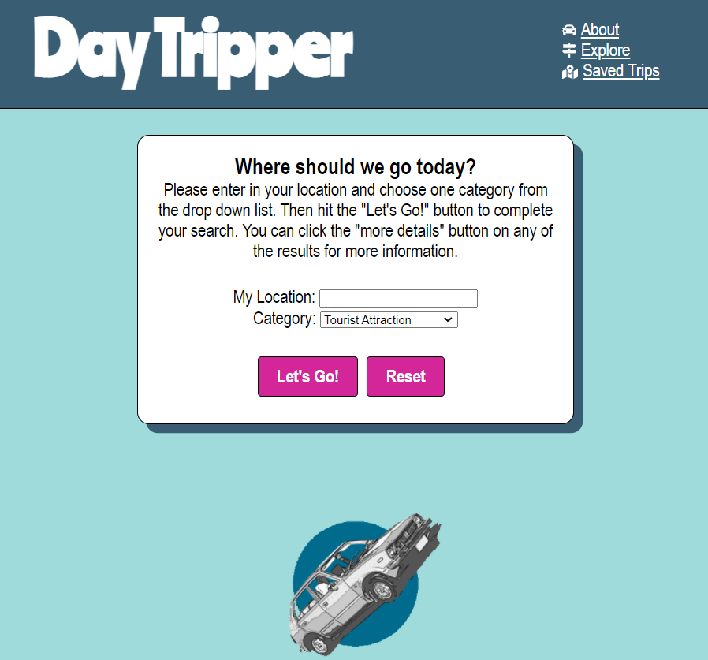
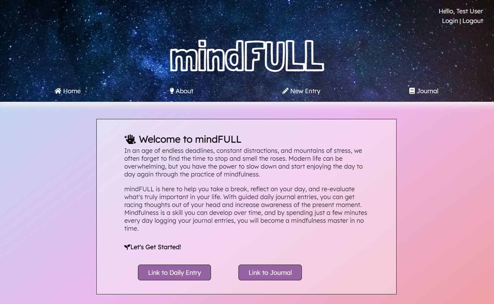

Welcome to my page!
Hey there, I'm Kaitlyn, an aspiring web developer. I live in Columbus, Indiana with my dog / motivational coach, Dodge. If you can't find Columbus on a map don't worry! It's a small town about an hour south of Indianapolis, known for it's architecture.
Currently, I'm working at an engine manufacturing company as an electronic hardware integration engineer. I'm a creative, hardworking individual who's always looking for the next challenge, and I would love to work with you on your future projects. Scroll down to learn more about me!
About Me
I started off my professional life as a mechanical engineer and then felt the pull to take my career in another direction. Ultimately, I found myself drawn to software engineering and am excited to begin this new journey.
I'm passionate about working on projects that will improve others' lives, and I believe as a developer, I can make that happen. I've had prior experience learning to code during my undergraduate classes and really enjoyed the process of writing code, testing code, and debugging. I'm a very detail oriented person and extremely self-motivated, which aligns well with the work of software engineer.
I'm excited about becoming a developer because I've always had an unsatiable appetite to learn new things, I'm a logical thinker who loves solving puzzles, and I enjoy creating and building things from scratch.
Skills & Services
- Front End: JavaScript ES6, React, jQuery, HTML5, CSS3
- Back End: Node.js, PostgreSQL, Express
- Dev Tools: Mocha, Chai, Git, GitHub, Heroku

Fun Facts
Those who know me, would describe me as a crazy, dog mom. I'm a huge animal and nature lover, and enjoy spending most of my time outdoors. I love a good cup of coffee and catching up with friends. I'm also a big fan of live music and summer concerts. Outside of work you can find me hiking with my dog, learning how to dance at my local studio, or starting on my next craft project!

Team Player
I've always been the person on a team project who acts as the "glue" to keep everyone on track and motivated. I get value from helping and training others, which makes working with a team very rewarding to me. My current job has taught me the importance of working with a diverse, cross-functional team in order to deliver the best product. As an introvert, I can be independent at times, but will always step up and do my part when I'm working with a group.
My Project Portfolio
Recipe Hero
Recipe Hero was created to help users find recipes based on ingredients they already have on hand in their fridge. Users can select multiple ingredients to optimize their searches, and multiple recipes are returned for each search. This app is integrated with the Spoonful API recipe database.
Technology Used: HTML, CSS, JavaScript, jQuery

Day Tripper
Day Tripper is a trip planning app that interfaces with Google Maps API endpoints to help users find new, unique locations to visit. Users can filter by by different location categories such as museums and parks. Users can also save favorite trips to their trip journal.
Technology Used: HTML, CSS, JavaScript, React, Node, PostGreSQL, Express
mindFULL
mindFULL is a virtual mindfulness journal that allows users to fill out a guided daily entry form to track their mood, stress level, gratitudes, and any other thoughts they wish to include. Users can track their progress and review saved entries in their mindFULL journal log.
Technology Used: HTML, CSS, JavaScript, React, Node, PostGreSQL, Express
